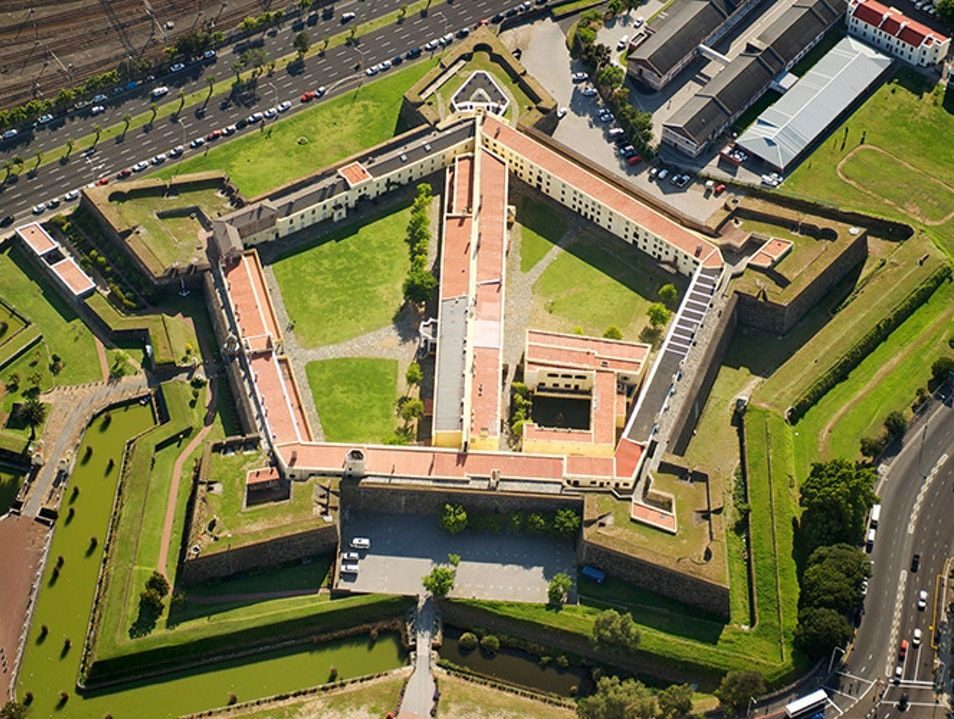
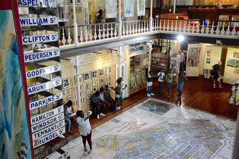
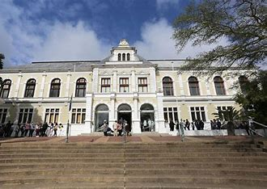

Shenzhen is the one of the leading tech cities in the world, I would like to visit this city to view and experience what developments are currently happening in one of the cities which will shape the future of the world.
A foriegn language I would like to learn is Japanese, three phrases I already know from the language include the following:
| Japanese phrase | English translation |
|---|---|
| やれやれ (Yare yare) | Good grief. |
| おはようございます(Ohayou gozaimasu) | Good morning. |
| 希望の光が輝いています。(Kibou no hikari ga kagayaiteimasu.) | The light of hope shines brightly. |
It was not built by Jan Van Riebeeck. The Castle of Good Hope was referred to as “Kui keip” (Stone Kraal) by the Khoi. Yellow paint was originally chosen for the walls because it reduced the effects of the hot African sun
The area of District Six was originally populated by freed enslaved people after abolition in 1833. . You can walk the museum floor covered by a large map of the district and accompanied by hand-written notes from former inhabitants.
The museum was founded in 1825, the first in the country. The museum is organized on four levels and hosts a variety of exhibitions, from rock art to fossils, marine animals and meteorites. Iziko South African Museum: Home to thousands of specimens, including fossils, stone tools, traditional clothing, and artifacts dating back almost 700 million years.
